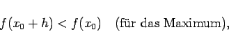
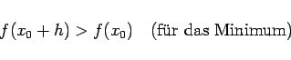

Inhalt Index DeskTop Bronstein

 Differentialrechnung Differentiation von Funktionen einer Veränderlichen Bestimmung von Extremwerten und Wendepunkten
Differentialrechnung Differentiation von Funktionen einer Veränderlichen Bestimmung von Extremwerten und Wendepunkten


Unter relativen oder lokalen Extremwerten versteht man die relativen Maxima und Minima einer Funktion. Relatives Maximum (M) bzw. relatives Minimum (m) einer Funktion f(x) werden solche Funktionswerte f(x0) genannt, die die Ungleichungen
|  | (6.34a) |
|  | (6.34b) |
erfüllen, wobei für h beliebig kleine positive oder negative Werte eingesetzt werden können. Im relativen Maximum sind die Werte f(x0) größer als alle benachbarten Funktionswerte und entsprechend im Minimum kleiner. Den größten bzw. kleinsten Wert, den eine Funktion in einem Intervall annehmen kann, bezeichnet man als ihr globales oder absolutes Maximum bzw. globales oder absolutes Minimum in bezug auf dieses Intervall.